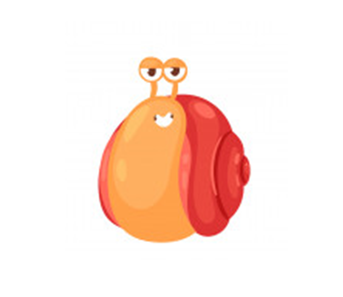
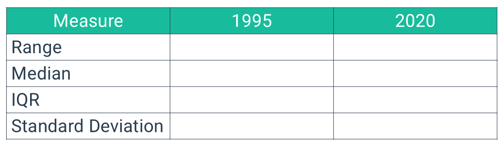

Central Tendency & Variability

Learning Check 03
Please answer the following questions to verify you understand the topics in this tutorial.

Source: U.S. General Social Survey 1994-2022
Using our data from before, calculate the mean and the median (with R or by hand).
# store the values in an object called my_data
my_data <- c(48000, 52000, 45000, 50000, 53000,
49000, 46000, 51000, 65000, 250000)
# Use the mean and median functionsYou went back to the original surveys and find out that there was a
typo with the outlier. Instead of 250,000, the actual
income was 25,000. Correct this in your data and calculate
the mean and the mode again.
# Create a frequency table for the `premarsx` variable.You’ve been asked to explain how the divorce rate has changed since the 1990s. To analyze this trend, you’ve been provided with a sample dataset containing the 1991-1995 and 2016-2020 divorce rates for Canada’s 10 provinces.
Number of persons who divorced per 1,000 married persons
| region | div_rate_1995 | div_rate_2020 |
|---|---|---|
| Newfoundland and Labrador | 7.9 | 6.2 |
| Prince Edward Island | 8.8 | 6.6 |
| Nova Scotia | 11.3 | 7.3 |
| New Brunswick | 9.4 | 7.4 |
| Quebec | 14.3 | 8.0 |
| Ontario | 12.2 | 7.2 |
| Manitoba | 11.4 | 7.1 |
| Saskatchewan | 10.6 | 7.7 |
| Alberta | 14.1 | 9.7 |
| British Columbia | 14.2 | 7.5 |
Source(s): Canadian Vital Statistics – Divorce Database (3235).
Start your analysis by calculating the statistics needed to fill in the following table.
Then, answer the questions below. Now’s a good time to get out some scratch paper and a pencil to do some math.
